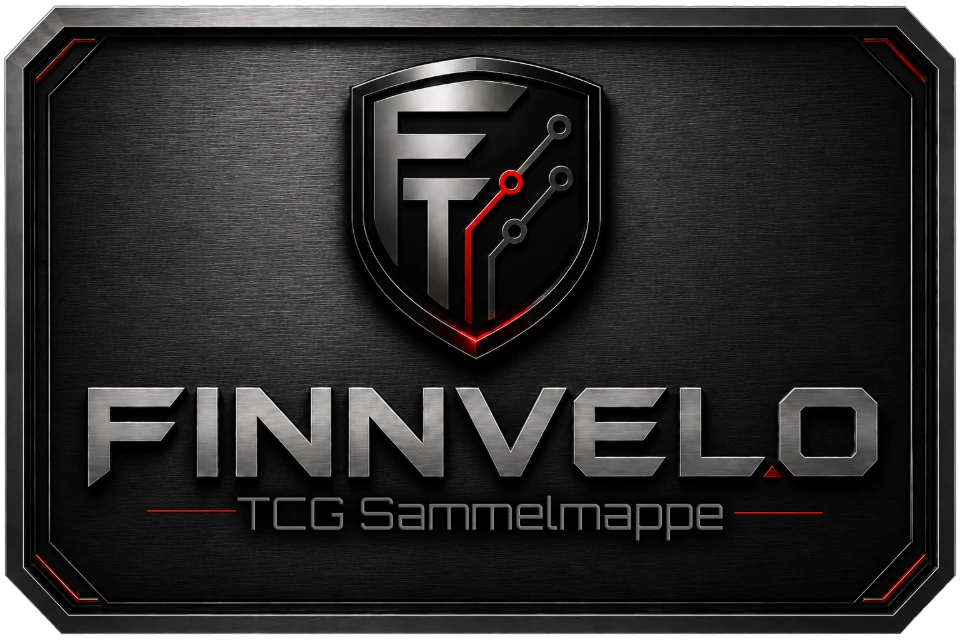
Sammlung · Deckbau · Deck-Generator · Testpartien
Finnvelo TCG Sammelmappe
VollversionDie eigene Sammelkarten-Sammlung im Griff – für Disney Lorcana, Pokémon, Magic: The Gathering, One Piece und Yu-Gi-Oh!: Karten per Kamera erfassen, Decks mit Regelprüfung und KI-Hilfe bauen und in simulierten Partien gegen Turnierdecks testen. Als Windows-Programm und Android-App mit demselben Funktionsumfang – ohne Konto, alle Daten bleiben auf deinen Geräten.
Die Sammelmappe in einer Minute
Musik: „Intended Force“ – Kevin MacLeod (incompetech.com), Lizenz CC BY 3.0, Quelle: Wikimedia Commons; gekürzt und am Ende ausgeblendet.
Beschreibung
Die Finnvelo TCG Sammelmappe verbindet Sammlungsverwaltung und Deckbau für fünf Sammelkartenspiele: Disney Lorcana, Pokémon, Magic: The Gathering, One Piece und Yu-Gi-Oh! Die Kartendaten eines Spiels lädt das Programm beim ersten Öffnen. Karten werden per Webcam oder Handy-Kamera erkannt – auch Foil-Karten – oder aus vorhandenen Listen von Dreamborn, TCGplayer und Cardmarket übernommen. Der Kartenkatalog umfasst alle Sets, zu jeder Karte steht der Cardmarket-Preistrend bereit.
Beim Deckbau prüft das Programm die Regeln laufend mit. Die KI-Hilfe erkennt Spielstil und Thema eines angefangenen Decks und baut es auf Wunsch fertig, macht begründete Vorschläge und schickt das Deck in Testpartien. Der Deck-Generator geht noch einen Schritt weiter: Er stellt Decks ausschließlich aus Karten zusammen, die du besitzt, und lässt sie in simulierten Partien gegen Turnierdecks von Dreamborn, LorcanaTCG.ink und TopDeck.gg antreten.
Was noch fehlt, zeigt die Einkaufsliste je Deck mit Preisen und direkten Cardmarket-Links. Für den Verkauf führst du eine Verkaufsliste mit Sprache, Zustand und Notizen und trägst die Karten über ein eigenes Fenster Stück für Stück bei Cardmarket ein. PC und Handy gleichen sich im WLAN miteinander ab; das Handy kann dabei auch als Kamera für den PC dienen.
Sammlung per Kamera
Karten mit Webcam oder Handy-Kamera erfassen – die Bilderkennung erkennt auch Foil-Karten.
Listen übernehmen
Vorhandene Sammlungen aus Dreamborn, TCGplayer oder Cardmarket einlesen.
Deckbau mit Regelprüfung
Decks zusammenstellen, während das Programm die Deckregeln laufend prüft.
KI-Hilfe im Deckbau
„Ergänzen“ erkennt Spielstil und Thema und baut das Deck fertig, „Vorschläge“ nennt jeweils den Grund.
Deck-Generator
Decks aus der eigenen Sammlung bauen lassen und in simulierten Partien gegen Turnierdecks testen.
Verbundene Geräte
Beliebig viele PCs und Handys im WLAN abgleichen – das Handy dient auf Wunsch als Kamera für den PC.
Einkaufen
Fehlende Karten je Deck mit Preisen und Links zu Cardmarket, CardTrader oder deutschen Läden (Recollectibles, Battle-Bear) – bevorzugter Markt in den Einstellungen. Die Märkte öffnen in der gewählten Sprache (Deutsch, Englisch, Französisch, Italienisch, Spanisch).
Verkaufen
Direkt aus der Sammlung, auch in der App: Verkaufsliste mit Sprache, Zustand von Mint bis Poor, Notizen und Vermerk „Inseriert“.
Beim Kartenmarkt eintragen
Karte für Karte durchgehen, ein Klick kopiert den Eintrag, der Markt lässt sich je Karte umschalten. Dazu Klick-Liste, Excel, CSV und PDF.
Bilder je Reihe
In der App ein bis vier Kartenbilder je Reihe in Sammlung, Karten und Deckbau – mehr Karten auf einen Blick.
Wischen zwischen den Seiten
In der App wechselst du die Seiten durch seitliches Wischen: nach links zur nächsten, nach rechts zur vorigen. Abschaltbar unter Einstellungen → Bedienung.
Oberfläche
Die Bilder zeigen das Windows-Programm in Fassung 1.3.25 und die Android-App in Fassung 1.2.33. Ein Klick auf ein Bild öffnet es groß.
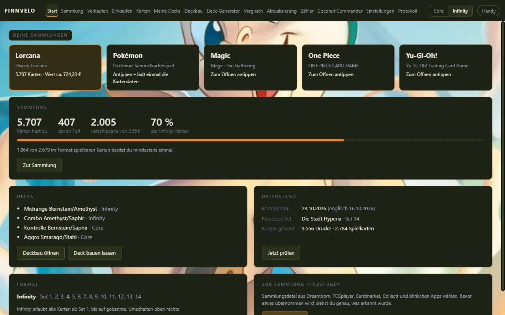
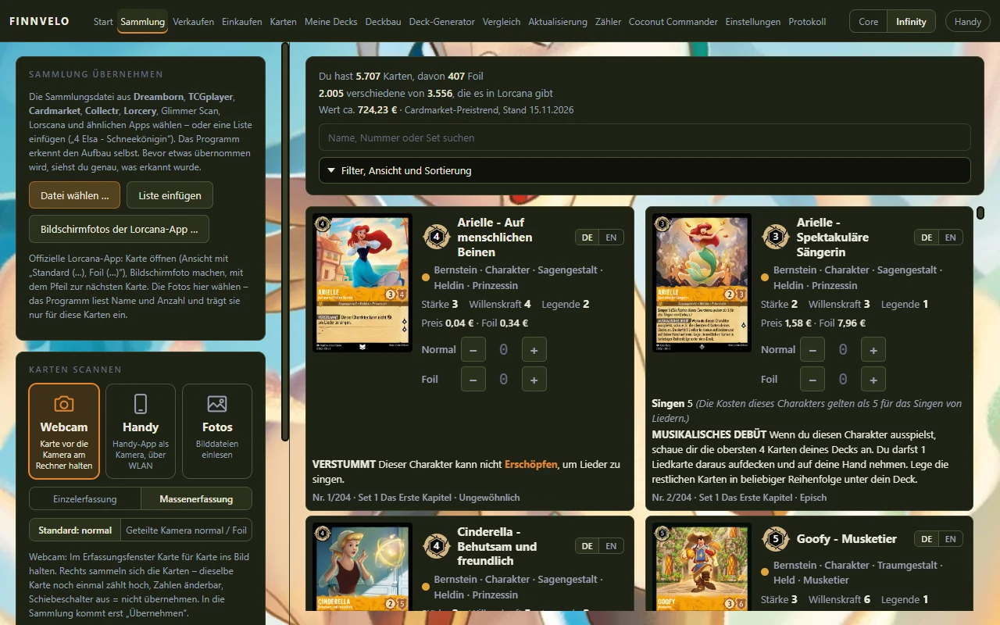
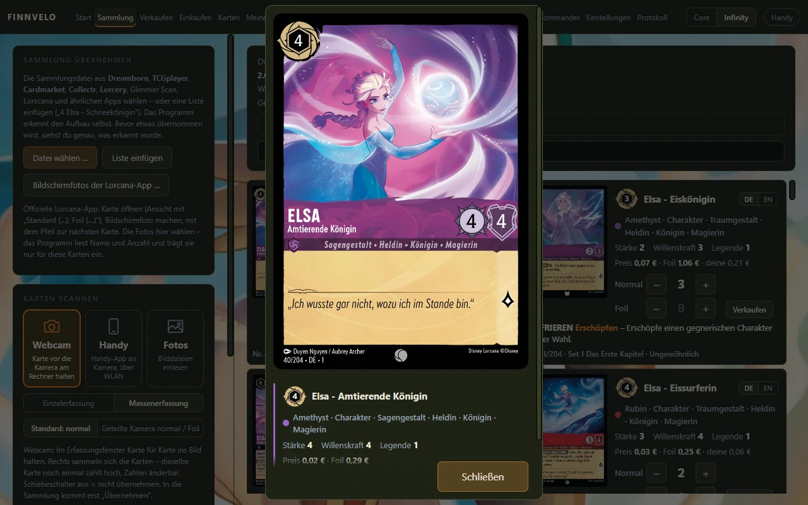
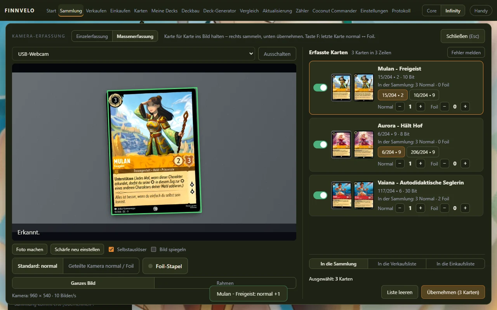
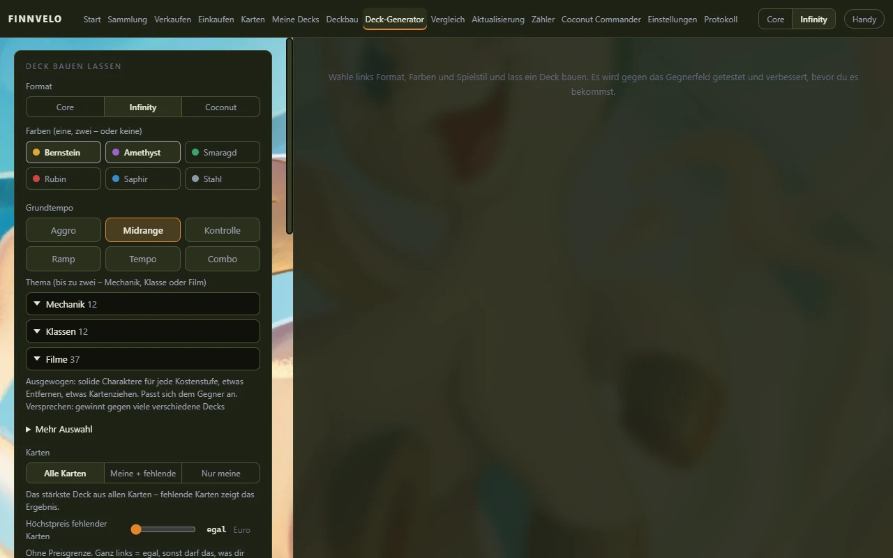
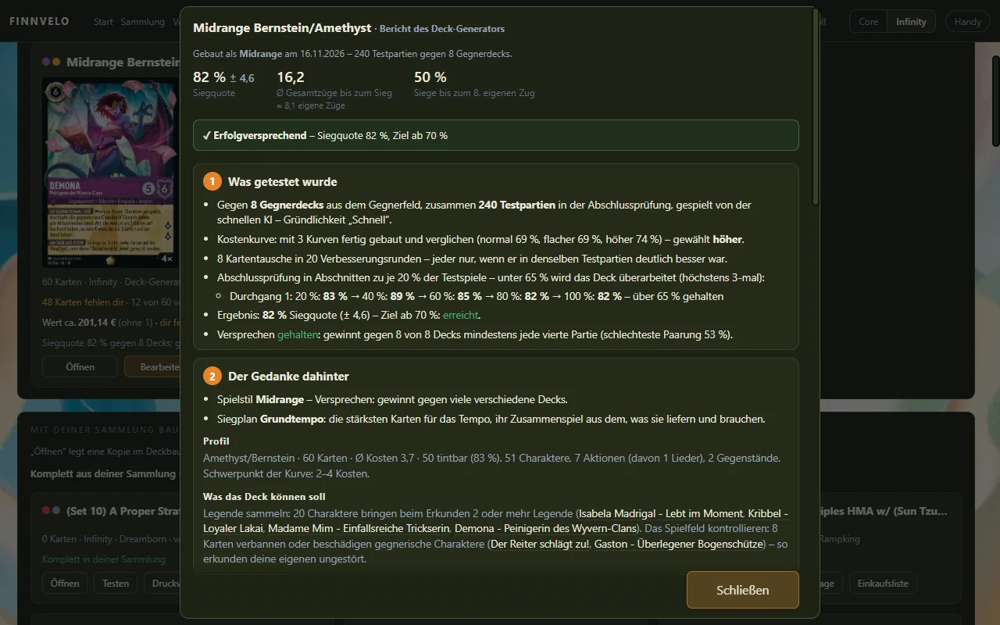
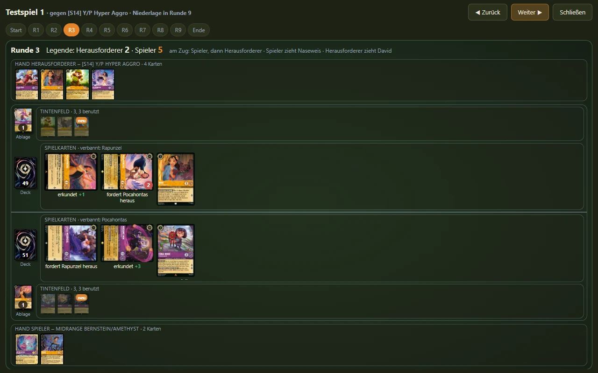
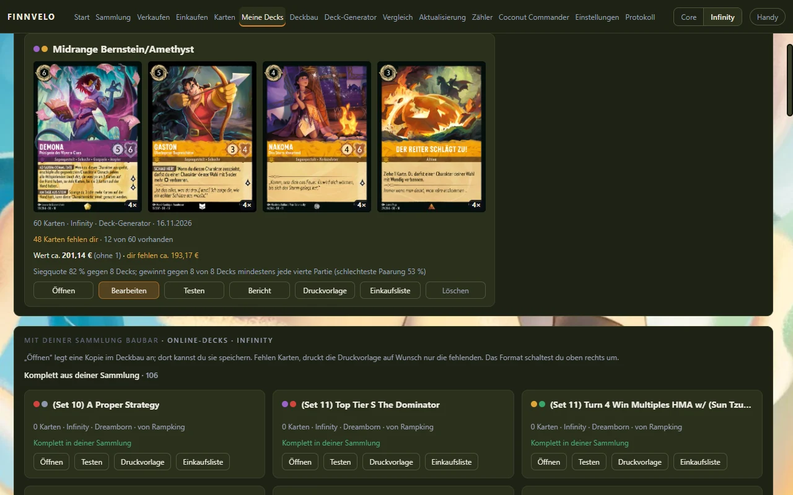
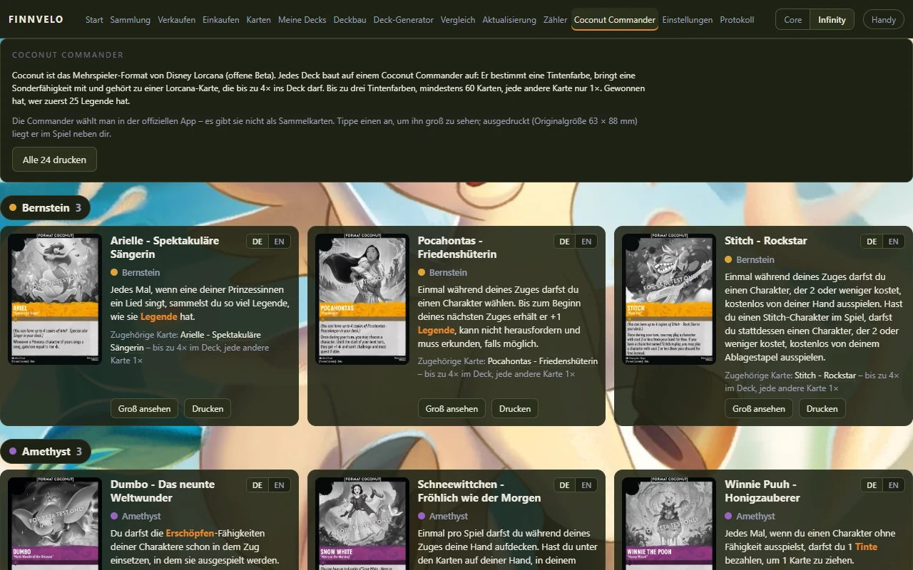
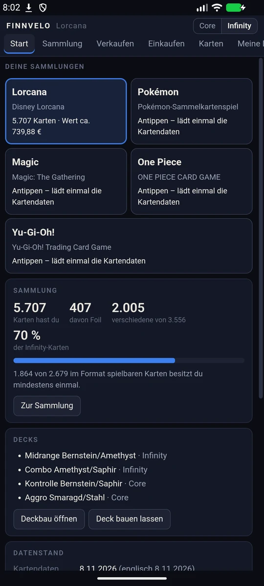
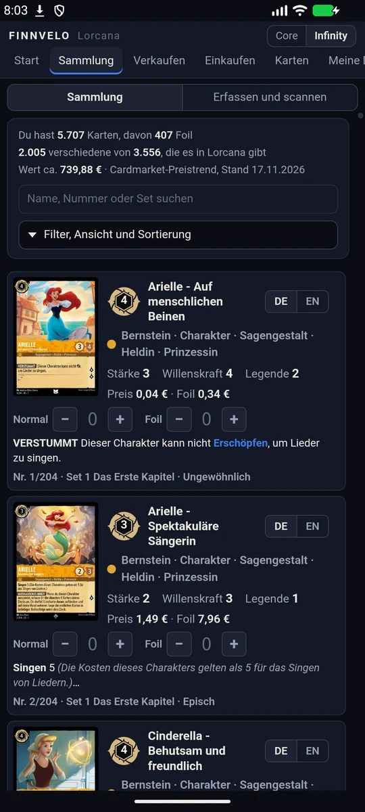
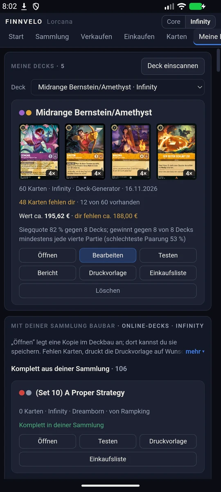
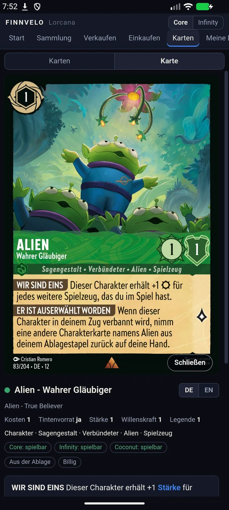
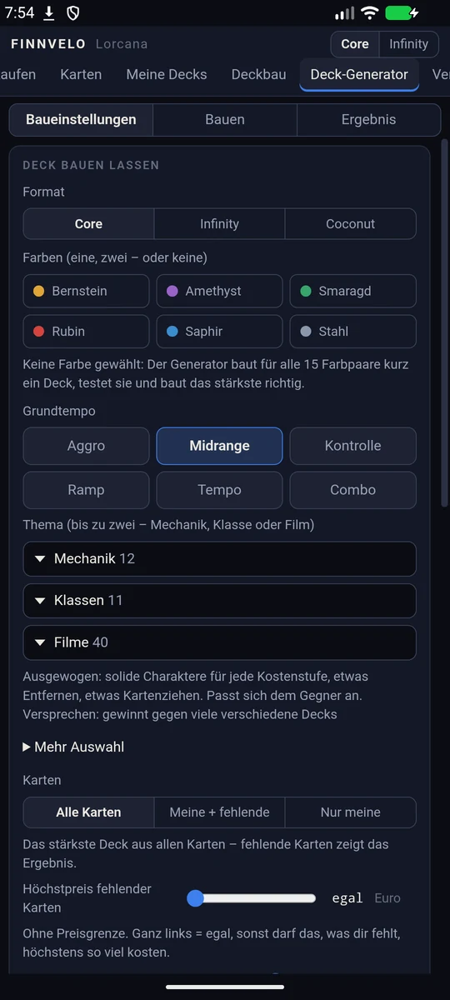
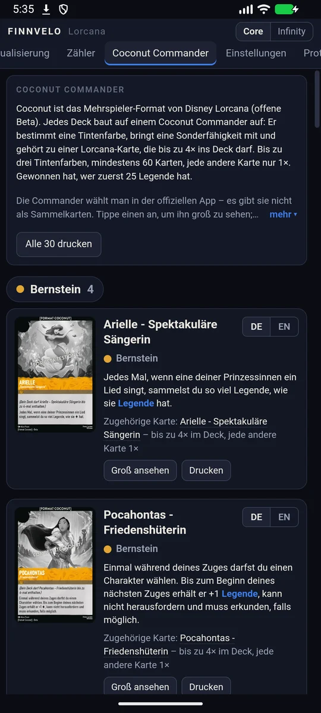
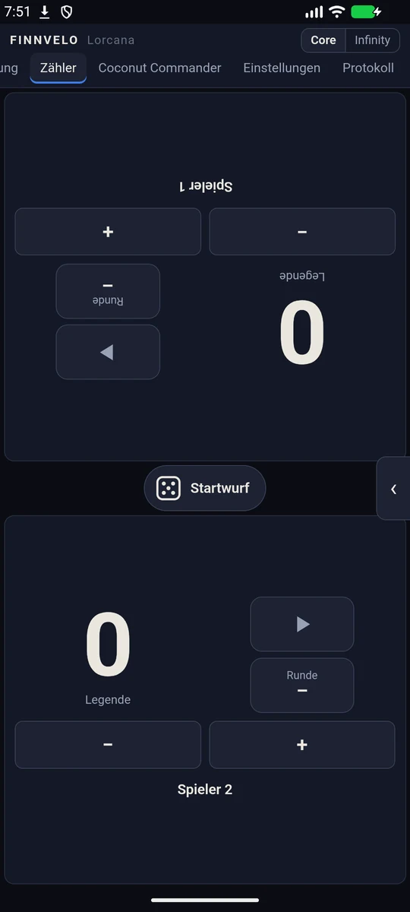
Einstellungen – das kannst du anpassen
Alles wird sofort angewendet und als Datei im Datenordner gespeichert. Ein Überblick über die Einstellungen von PC-Programm und App:
Darstellung
- ThemaHell, dunkel oder wie Windows bzw. wie das Handy.
- AkzentfarbeDie Farbe für Knöpfe und Hervorhebungen.
- HintergrundEigene Farbe, eigenes Bild oder am PC ein Kartenbild deiner Wahl – mit einstellbarer Deckkraft.
Karten und Bedienung
- KartengrößeKlein, mittel oder groß – für Sammlung, Kartenraster und die Vorschau beim Überfahren.
- Bilder je ReiheIn der App ein bis vier Kartenbilder nebeneinander.
- WischenIn der App die Seiten durch seitliches Wischen wechseln – abschaltbar.
- FormatCore oder Infinity, oben rechts umschaltbar – der Deckbau prüft danach die Regeln.
Kartenmärkte
- Einkaufen bei und Verkaufen beiCardmarket, CardTrader, Recollectibles oder Battle-Bear – alle liefern nach Deutschland.
- Märkte öffnen aufDeutsch, Englisch, Französisch, Italienisch oder Spanisch, soweit der Markt es anbietet.
- Links zeigen fürWelche Märkte in Einkaufen, Verkaufen, Klick-Liste, CSV und PDF verlinkt werden.
Programmstart
- Fenster beim StartFenster, maximiert oder Vollbild – F11 schaltet jederzeit um.
- MonitorAuf welchem Bildschirm das Programm startet.
Automatisch prüfen
- Neue Karten und RegelnBeim Start nachsehen, höchstens alle 12 Stunden.
- Online-DecksDreamborn, LorcanaTCG.ink und TopDeck.gg im Hintergrund abgleichen, höchstens einmal am Tag.
- KartenpreiseDen Cardmarket-Preistrend beim Start holen, höchstens einmal am Tag.
- Neue ProgrammfassungBeim Start und danach regelmäßig nachsehen; die Adresse lässt sich ändern.
Deckquellen, Daten und Hilfe
- TopDeck.ggMit eigenem Schlüssel als dritte Quelle für Turnierdecks – ohne Schlüssel bleibt sie aus.
- DatenordnerSammlung, Decks, Kartendaten, Bilder, Regeldokumente und Einstellungen liegen dort als Dateien.
- SicherungEine Datei mit Sammlung, Decks und Einstellungen – etwa für einen neuen PC oder ein neues Handy. Vor dem Einspielen wird der jetzige Stand gesichert.
- Fehler meldenProgramm- und Erkennungsfehler werden mitgeschrieben und auf Wunsch als Bericht per Mail geschickt.
So funktioniert's
Kurze Videos mit Musik zeigen die wichtigsten Abläufe im Windows-Programm. Weitere folgen.
Musik in allen Videos: „Intended Force“ – Kevin MacLeod (incompetech.com), Lizenz CC BY 3.0, Quelle: Wikimedia Commons; gekürzt und am Ende ausgeblendet.
Besondere Vorteile
- Sammlung, Deckbau, Testpartien und Verkauf in einem Programm
- Decks aus Karten, die du wirklich besitzt – in Testpartien gegen Turnierdecks geprüft
- Regler für die Höchstzahl nicht tintbarer Karten, einzelne Karten gezielt ersetzen
- PC und Handy mit gleichem Funktionsumfang, Abgleich im eigenen WLAN
- Ohne Konto und ohne Cloud: alle Daten als Dateien auf dem eigenen Gerät
- Sicherung als Datei, Protokoll mit Rücknahme einzelner Änderungen
Zielgruppe
Für alle, die Lorcana, Pokémon, Magic, One Piece oder Yu-Gi-Oh! sammeln oder spielen: wer den Überblick über eine wachsende Sammlung behalten will, wer neue Decks ausprobieren möchte, bevor er Karten kauft, und wer doppelte Karten ohne viel Tipparbeit bei Cardmarket anbieten will.
- Sammlerinnen und Sammler, die ihre Karten per Kamera statt per Hand erfassen wollen.
- Spielerinnen und Spieler, die neue Decks erst in Testpartien prüfen, bevor sie Karten kaufen.
- Wer am PC planen und mit dem Handy am Spieltisch oder auf der Börse nachsehen möchte.
Voraussetzungen
- Windows 10 oder 11 (64 Bit)
- Android 7 oder neuer
- Für den Abgleich: Handy und PC im selben WLAN. Beim ersten Start fragt Windows nach dem Netzwerkzugriff – mit „Zulassen“ bestätigen.
Daten und Rechte
Kartendaten stammen von LorcanaJSON (lorcanajson.org), Kartenbilder und Regeldokumente von Ravensburger, öffentliche Decks von Dreamborn, LorcanaTCG.ink und TopDeck.gg.
Die Finnvelo TCG Sammelmappe ist ein inoffizielles Fan-Programm und steht in keiner Verbindung zu den Herstellern der Spiele. Disney Lorcana ist eine Marke von Disney und Ravensburger, Pokémon von Nintendo, Creatures und GAME FREAK, Magic: The Gathering von Wizards of the Coast, das One Piece Card Game von Bandai und Yu-Gi-Oh! von Konami.
Deine Sammlung, Decks und Einstellungen liegen als Dateien auf deinem Gerät, ohne Konto und ohne Cloud. PC und Handy gleichen sich direkt im eigenen WLAN ab. Ins Netz geht das Programm für Kartendaten und Regeln, Kartenbilder, öffentliche Decks, den Cardmarket-Preistrend und die Suche nach neuen Fassungen. Das automatische Nachsehen beim Start lässt sich unter „Automatisch prüfen“ für jeden dieser Punkte einzeln abschalten – außer den Kartenbildern, die beim ersten Zeigen einmal geladen werden.
Download (Android-App)
Fassung 1.2.38
Die Android-App als Installationsdatei (APK, rund 12,7 MB) für Android 7 oder neuer. Sie kommt nicht aus dem Play Store, deshalb fragen Chrome und Android beim Herunterladen und Installieren nach. Was dann zu tun ist, erklärt „Warum warnt mein Gerät?“.
Download startenAktualisierungen
Die App sieht selbst nach, ob eine neue Fassung bereitsteht, und öffnet den Download dann im Browser.
Download (PC-Version)
Fassung 1.3.33
Installationsprogramm für Windows 10 und 11 (64 Bit, rund 93 MB). Das Programm bietet denselben Funktionsumfang wie die App und gleicht sich mit ihr im WLAN ab.
PC-Version herunterladenHinweis
Windows meldet bei unbekannten Programmen einen Warnhinweis. Über „Weitere Informationen“ → „Trotzdem ausführen“ lässt sich die Einrichtung fortsetzen. Neue Fassungen meldet das Programm selbst.
Mac (Intel und Apple-Chip) · Fassung 1.3.32
Eine Datei für Macs mit Intel- und mit Apple-Chip (DMG, rund 182 MB), ab macOS 10.15. Der Funktionsumfang ist derselbe wie unter Windows – auch Bildschirmfotos der offiziellen Lorcana-App liest sie ein.
Mac-Version herunterladenSo installierst du sie am Mac
- „Mac-Version herunterladen“. Die DMG-Datei landet in „Downloads“.
- DMG doppelklicken und im Fenster die „FINNVELO TCG Sammelmappe“ auf den Ordner „Programme“ („Applications“) ziehen. Danach das DMG auswerfen („Eject“).
- Die Sammelmappe in „Programme“ („Applications“) doppelklicken. macOS meldet, dass Apple sie nicht überprüfen konnte („Apple could not verify …“). „Fertig“ („Done“) bzw. „OK“ klicken – nicht „In den Papierkorb legen“ („Move to Trash“).
Grund: Die Mac-Fassung ist ohne Apple-Entwicklerkonto gebaut und deshalb nicht von Apple beglaubigt (das Konto kostet 99 US-Dollar im Jahr). - Ab macOS 15 (Sequoia): Apfelmenü (Apple menu) → „Systemeinstellungen“ („System Settings“) → „Datenschutz & Sicherheit“ („Privacy & Security“) → ganz nach unten zum Abschnitt „Sicherheit“ („Security“) scrollen.
- Dort steht „FINNVELO TCG Sammelmappe wurde blockiert …“ („… was blocked …“): auf „Dennoch öffnen“ („Open Anyway“) klicken und mit Passwort oder Touch ID bestätigen. Im nächsten Fenster noch einmal „Dennoch öffnen“ („Open Anyway“). Ab jetzt startet die Sammelmappe normal.
Bis macOS 14 (Sonoma) geht es kürzer: in „Programme“ („Applications“) mit der rechten Maustaste (oder Ctrl-Klick) auf die Sammelmappe → „Öffnen“ („Open“) → im Fenster noch einmal „Öffnen“ („Open“). - Bei einem Update öffnet sie das neue DMG; die App wieder in „Programme“ („Applications“) ziehen und die alte ersetzen („Replace“).
- Meldet macOS, die App sei „beschädigt“ („damaged“), im Terminal eingeben:
xattr -dr com.apple.quarantine "/Applications/FINNVELO TCG Sammelmappe.app"– danach wie Schritt 3 bis 5.
Steam Deck / Linux · Fassung 1.3.32
AppImage für Linux (x86_64, rund 116 MB) – auf dem Steam Deck im Desktop-Modus. Der Funktionsumfang ist derselbe wie unter Windows – auch Bildschirmfotos der offiziellen Lorcana-App liest sie ein.
Steam-Deck-/Linux-Version herunterladenSo installierst du sie auf dem Steam Deck
- In den Desktop-Modus („Desktop Mode“) wechseln: Steam-Taste → Ein/Aus („Power“) → „Zum Desktop wechseln“ („Switch to Desktop“).
- Im Browser diese Seite öffnen und „Steam-Deck-/Linux-Version herunterladen“ antippen. Die Datei landet im Ordner „Downloads“.
- Wichtig: Die Datei noch nicht doppelklicken. Erst den Dateimanager (Dolphin) öffnen → „Downloads“ → Rechtsklick auf FINNVELO-TCG-Sammelmappe-…-x86_64.AppImage (linke Schultertaste L2 oder lange auf die Datei tippen) → „Eigenschaften“ („Properties“) → Reiter „Berechtigungen“ („Permissions“) → Haken bei „Ist ausführbar“ („Execute“) → OK. Ohne diesen Schritt startet die Datei gar nicht.
Fragt das Steam Deck „Choose an application to open …“, fehlt genau dieser Haken. Dann abbrechen („Cancel“) und den Haken setzen. - Doppelklick auf die Datei, dann startet die Sammelmappe.
- Beim ersten Start fragt die Sammelmappe: „Auf diesem Gerät einrichten?“ – „Einrichten“ wählen. Sie legt sich in den Ordner „Applications“ im persönlichen Ordner („Home“), erscheint im Startmenü („Application Launcher“) und auf dem Desktop und startet von dort neu. Die heruntergeladene Datei in „Downloads“ kannst du danach löschen. Neue Fassungen lädt die Sammelmappe selbst.
- Für den Spielmodus („Gaming Mode“): im Startmenü („Application Launcher“) mit rechts auf „FINNVELO TCG Sammelmappe“ → „Zu Steam hinzufügen“ („Add to Steam“). Danach steht sie in der Bibliothek („Library“) unter „Nicht-Steam“ („Non-Steam“).
Alternativ in Steam: „Spiele“ („Games“) → „Ein Nicht-Steam-Spiel zu meiner Bibliothek hinzufügen …“ („Add a Non-Steam Game to My Library …“).